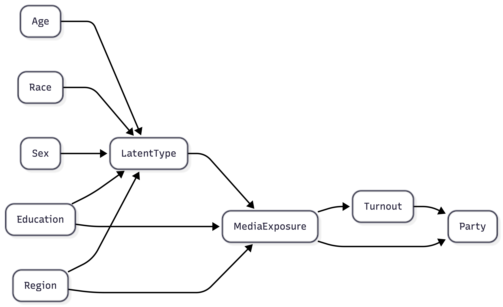
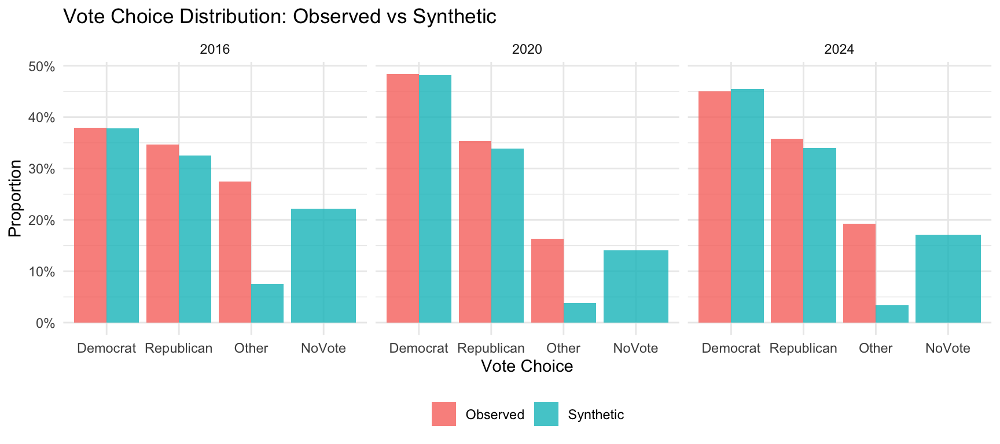
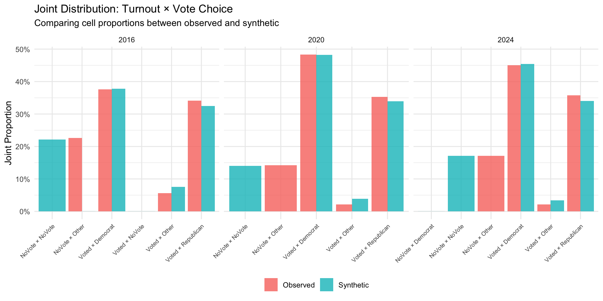
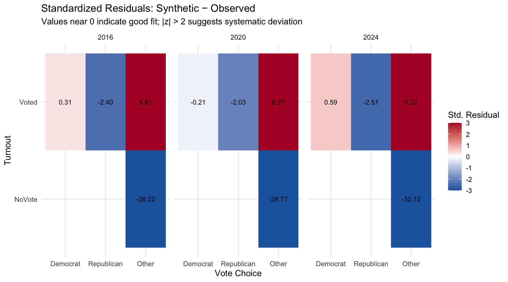
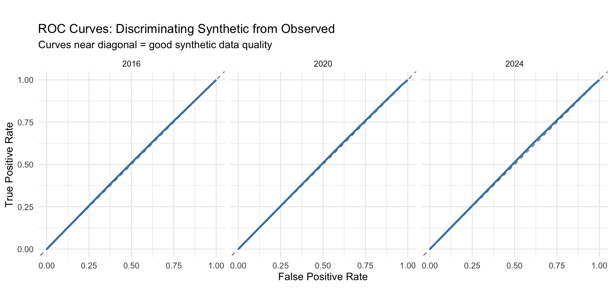
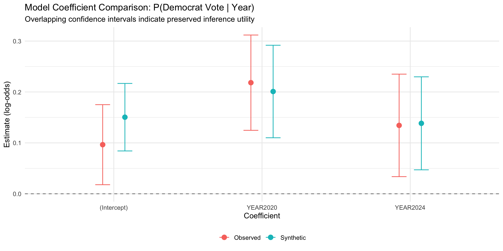

flowchart LR
A[Age] --> L[LatentType]
R[Race] --> L
S[Sex] --> L
E[Education] --> L
Reg[Region] --> M[MediaExposure]
L --> M
E --> M
M --> T[Turnout]
M --> P[Party]
L --> T
L --> P
Media Effects and Party Support Volatility in US: A Synthetic Data Approach
Karl Ho
University of Texas at Dallas
John Marion Glendenning
University of Texas at Dallas
Prepared for presentation at the SPSA 2026 CWC #12 Panel: Generative Language Models in Political Science Research, January 17, 2026.
The Problem
- Media consumption and partisan attitudes are deeply intertwined
- Voters most susceptible to media influence are hardest to study:
- Weak partisan attachments
- Low political engagement
- Systematically underrepresented in surveys
- Traditional surveys face mounting nonresponse challenges
Silicon Samples: Promise and Limitations
Argyle et al. (2023): LLM-generated “silicon samples” show high correlation with human responses (r > 0.9 for vote choice)
Bisbee et al. (2024): Critical limitations identified
- Reduced variance (48% of coefficients significantly different)
- Unpredictable prompt sensitivity
- Temporal instability
- Demand effects
Our Approach
Silicon-Augmented Survey Research
- Bayesian networks fitted to ANES data
- Explicit causal structure via directed acyclic graphs
- Year-specific models (2016, 2020, 2024)
- Pearl’s do-calculus for counterfactual analysis
Why Bayesian Networks?
| LLM-Based | Bayesian Networks |
|---|---|
| Opaque computations | Transparent DAG structure |
| Reduced variance | Preserves distributional fidelity |
| Prompt-sensitive | Replicable |
| Single pretrained model | Year-specific fitting |
Theoretical Framework
Three motivating considerations:
Prior (2007): Do high-choice media environments differentially affect partisan stability across engagement levels?
Zaller (1992): How does media exposure shape accessibility of partisan considerations?
Methodological: Can synthetic samples illuminate patterns difficult to observe in finite human samples?
Data: ANES 2016–2024
| Study | Pre-Election N | Post-Election N |
|---|---|---|
| ANES 2016 | 4,271 | 3,649 |
| ANES 2020 | 8,280 | 7,449 |
| ANES 2024 | 5,521 | 4,964 |
| Total | 18,072 | 16,062 |
Key Variables
Outcomes:
- Turnout (voted / did not vote)
- Vote choice (Democrat / Republican / Other / NoVote)
Treatment:
- Media exposure (Left / Right / Both / None)
Demographics:
- Age, Sex, Education, Region
The Causal Structure
The Causal Path

Demographics → Latent Type → Media Exposure → Turnout & Vote Choice
Methods Pipeline
- Data Harmonization — Consistent coding across waves
- Latent Class Analysis — Identify voter segments (3–4 classes per year)
- Bayesian Network Specification — Theory-driven DAG
- Network Fitting — Conditional probability tables
- Synthetic Data Generation — Observational & interventional
- Validation — Multiple quality assessments
Validation Results: Distributed Fidelity
Validation Results: Association Structure
Validation Results: Joint Distribution Preservation
Validation Results: Statistical Indistinguishability - ROC Curves
Validation Results: Logistic regression models (Voting Democrat)
Validation Results: Summary Table
| Metric | Result | Interpretation |
|---|---|---|
| TVD (turnout) | 0.001–0.003 | Excellent match |
| TVD (vote choice) | 0.011–0.016 | Excellent match |
| Chi-square (turnout) | p > 0.50 | No significant difference |
| Cramér’s V diff | 0.000 | Perfect association preservation |
| AUC | 0.506–0.509 | Indistinguishable from chance |
Causal Analysis: Do-Calculus
For each intervention \(do(MediaExposure = m)\):
\[\Delta\text{Turnout} = P(\text{Voted} \mid do(M = m)) - P(\text{Voted} \mid \text{natural})\]
Two quantities of interest:
- Mobilization effects: Changes in turnout probability
- Persuasion effects: Changes in party choice among voters
Results: Mobilization Effects
- Modest effects across all media regimes (±2 percentage points)
- Right-leaning media: slight positive mobilization in 2016, 2020
- 2024: exposure to both left and right media associated with higher turnout
Results: Persuasion Effects
- Democratic vote share varied 2–4 percentage points across regimes
- Left-leaning media → higher Democratic support
- Right-leaning media → lower Democratic support
- Consistent with selective exposure theory
Heterogeneous Treatment Effects
Media effects are not uniform across the electorate:
- Lower baseline engagement → larger mobilization responses
- Highly engaged partisans → minimal responsiveness
Aligns with Zaller (1992): moderately aware citizens receive sufficient exposure to be affected but lack partisan anchoring to resist
Cross-Year Patterns
- Limited temporal stability in media effects
- Patterns shifted across 2016, 2020, 2024
- Supports year-specific modeling approach
- Candidate-specific factors matter (Trump in all three cycles)
Implications
- Hypothesis generation — Examine rare voter profiles with sufficient power
- Counterfactual simulation — “What if all voters consumed only left-leaning media?”
- Methodological validation — Discrepancies reveal model misspecification
- Privacy-preserving data sharing — No individual records in synthetic data
Limitations
- DAG imposes strong causal assumptions
- Synthetic data inherit ANES selection biases
- Four-category media measure obscures platform-specific effects
- Unmeasured confounders may bias causal estimates
- American electoral context limits generalizability
Conclusion
- Bayesian network-based synthetic data generation is a viable complement to survey research
- Addresses key limitations of LLM-based silicon samples:
- Preserves variance structure
- Enables principled causal inference
- Fully replicable
- Media effects modest but heterogeneous—largest among disengaged voters
Future Directions
Dynamic modeling: Bayesian networks that model transitions across election cycles
Experimental validation: Use counterfactual predictions to design randomized media exposure experiments
Thank You
Karl Ho karlho@gmail.com
John Marion Glendenning John.Glendenning@UTDallas.edu
Paper & materials: datageneration.io/conference/spsa
References
- Argyle, L.P. et al. (2023). Out of one, many: Using language models to simulate human samples. Political Analysis, 31, 337–351.
- Bisbee, J. et al. (2024). Synthetic replacements for human survey data? The perils of large language models. Political Analysis, 32, 401–416.
- Pearl, J. (2009). Causality: Models, Reasoning, and Inference (2nd ed.). Cambridge University Press.
- Prior, M. (2007). Post-Broadcast Democracy. Cambridge University Press.
- Zaller, J.R. (1992). The Nature and Origins of Mass Opinion. Cambridge University Press.
More on LLM Silicon Samping and Bayesian Networks
The Fundamental Question
How do we generate synthetic survey respondents?
Two approaches:
- LLM Silicon Sampling — Prompt language models with demographic profiles
- Bayesian Networks — Fit explicit probabilistic models to observed data
LLM Silicon Sampling
Give ChatGPT a demographic profile:
“You are a 45-year-old white male with a high school education living in rural Ohio who watches Fox News…”
- LLM generates response based on patterns learned during pretraining
- The “model” is implicit—encoded in billions of neural network weights
- Cannot inspect why it predicts what it predicts
Bayesian Networks
Fit explicit conditional probability tables to observed data:
- DAG encodes causal assumptions visually
- Generate by sampling from fitted joint distribution
- Every assumption and probability is inspectable
A Concrete Example
What’s P(VoteDem | Age=18-29, Media=Left)?
LLM approach:
Prompt: "You are a 22-year-old who primarily
consumes left-leaning media such as MSNBC. Who would you
vote for in 2024?"
Response: "I would vote for the Democratic
candidate because..."Where does this come from? Internet text, stereotypes, news articles?
A Concrete Example (cont.)
Bayesian Network approach:
\[P(\text{VoteDem} \mid \text{Age=18-29}, \text{Media=Left}) = 0.72\]
- Probability from conditional probability table
- Fitted directly to ANES data
- Fully traceable
Key Distinctions
| Dimension | Bayesian Networks | LLM Sampling |
|---|---|---|
| Structure | Explicit DAG | Implicit in weights |
| Fitting | CPTs from data | Pretraining corpus |
| Transparency | Fully inspectable | Black box |
| Causal inference | do-calculus | No formal apparatus |
Key Distinctions (cont.)
| Dimension | Bayesian Networks | LLM Sampling |
|---|---|---|
| Variance | Preserved | Often compressed |
| Replication | Exact (given seed) | Varies with updates |
| Temporal | Year-specific | Single pretrained model |
Why Transparency Matters
Bayesian Networks make assumptions explicit:
- Demographics → Latent Type → Media → Vote Choice
- Critics can inspect, challenge, revise
LLMs encode assumptions implicitly:
- Learned from internet text
- May reflect stereotypes, media representations
- Cannot be directly examined or corrected
Why Causal Inference Matters
Bayesian Networks: Pearl’s do-calculus enables counterfactual analysis
\[P(\text{Vote} \mid do(\text{Media} = \text{Left}))\]
LLMs: No formal apparatus for distinguishing:
- Causal effects vs. correlations
- Interventions vs. observations
The Variance Problem
Bisbee et al. (2024) found LLM responses show:
- Significantly reduced variance
- 48% of regression coefficients statistically different from ANES
- Problematic for studying opinion heterogeneity
Bayesian Networks preserve variance by fitting directly to observed distributions
The Replication Problem
LLM Silicon Sampling:
- Same prompt → different results over time
- Model updates change outputs
- Closed-source models threaten reproducibility
Bayesian Networks:
- Same seed → identical results
- Fully documented and shareable
- Open-source implementation (bnlearn)
Whose Opinions Do LLMs Reflect?
Santurkar et al. (2023): LLMs disproportionately reflect:
- Liberal viewpoints
- Educated populations
- Western perspectives
This is not the target population for studying American voters
Foundational Literature: Bayesian Networks
Origins:
- Pearl (1988). Probabilistic Reasoning in Intelligent Systems
- Pearl (2009). Causality: Models, Reasoning, and Inference
Textbooks:
- Koller & Friedman (2009). Probabilistic Graphical Models
- Scutari & Denis (2014). Bayesian Networks with Examples in R
Literature: Synthetic Data Generation
Raghunathan, Reiter, & Rubin (2003). Multiple imputation for statistical disclosure limitation. Journal of Official Statistics
Zhang et al. (2017). PrivBayes: Private data release via Bayesian networks. ACM TODS
Gogoshin et al. (2021). Synthetic data generation with probabilistic Bayesian networks. Math Biosciences & Engineering
Literature: Causal Inference
Pearl (2019). The seven tools of causal inference. Communications of the ACM
Spirtes, Glymour, & Scheines (2000). Causation, Prediction, and Search
Hernán & Robins (2020). Causal Inference: What If
Imbens & Rubin (2015). Causal Inference for Statistics, Social, and Biomedical Sciences
Literature: LLM Limitations
Argyle et al. (2023). Out of one, many. Political Analysis
Bisbee et al. (2024). Synthetic replacements for human survey data? Political Analysis
Santurkar et al. (2023). Whose opinions do language models reflect? ICML
Bender et al. (2021). On the dangers of stochastic parrots. FAccT
When to Use Each Approach
LLM Silicon Sampling may be useful for:
- Open-ended response generation
- Qualitative reasoning simulation
- Exploratory hypothesis generation
Bayesian Networks are preferable for:
- Quantitative hypothesis testing
- Causal inference
- Replicable research
- Categorical survey data
Summary
| Bayesian Networks | LLM Sampling | |
|---|---|---|
| Transparency | ✓ | ✗ |
| Causal inference | ✓ | ✗ |
| Variance preservation | ✓ | ✗ |
| Replicability | ✓ | ✗ |
| Open-ended responses | ✗ | ✓ |
Conclusion
Bayesian networks and LLM silicon sampling are complementary, not competing
For studying media effects on voting behavior:
- Need causal inference → Bayesian networks
- Need distributional fidelity → Bayesian networks
- Need replicability → Bayesian networks
Our approach: Silicon-augmented survey research using Bayesian networks
References
- Argyle et al. (2023). Out of one, many. Political Analysis, 31, 337–351.
- Bisbee et al. (2024). Synthetic replacements for human survey data? Political Analysis, 32, 401–416.
- Koller & Friedman (2009). Probabilistic Graphical Models. MIT Press.
- Pearl (1988). Probabilistic Reasoning in Intelligent Systems. Morgan Kaufmann.
- Pearl (2009). Causality (2nd ed.). Cambridge.
- Santurkar et al. (2023). Whose opinions do language models reflect? ICML.
- Scutari & Denis (2014). Bayesian Networks with Examples in R. CRC Press.

SPSA 2026 | Media Effects and Party Support Volatility